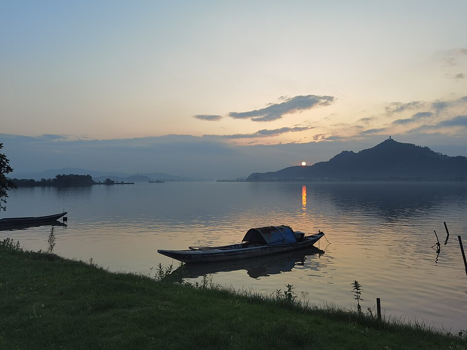
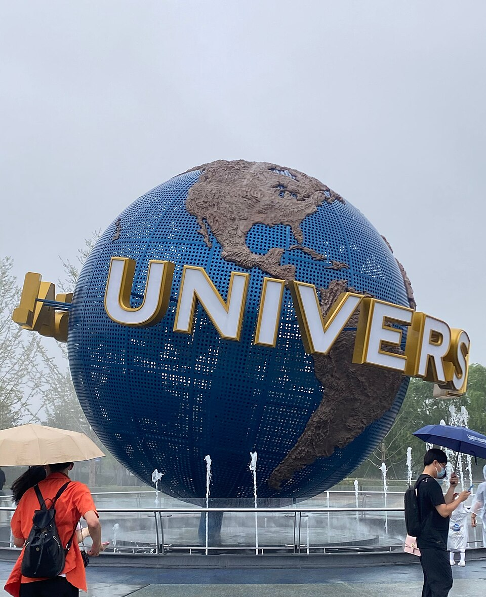

壹
行程记录
ALL TRIPS
第 ① 篇瑶琳仙境一日游
杭州滨江出发,自驾往返 180 km。上午钻 18℃ 的金色溶洞,下午逛瑶琳国家森林公园,夜里带着富春江的晚霞回城。
翻看笔记

第 ② 篇 · 计划中北京环球影城 · 三方案对比
杭州 1400 公里外的那个地球仪。舒适 3 天 2 晚 / 性价比 2 天 1 晚 / 极限 1 天闪击——费用估算器一算便知,年底淡季窗口最划算。
翻看笔记
更多旅途,等你来记 —— 每次结束一段旅程,就在这儿新开一篇。